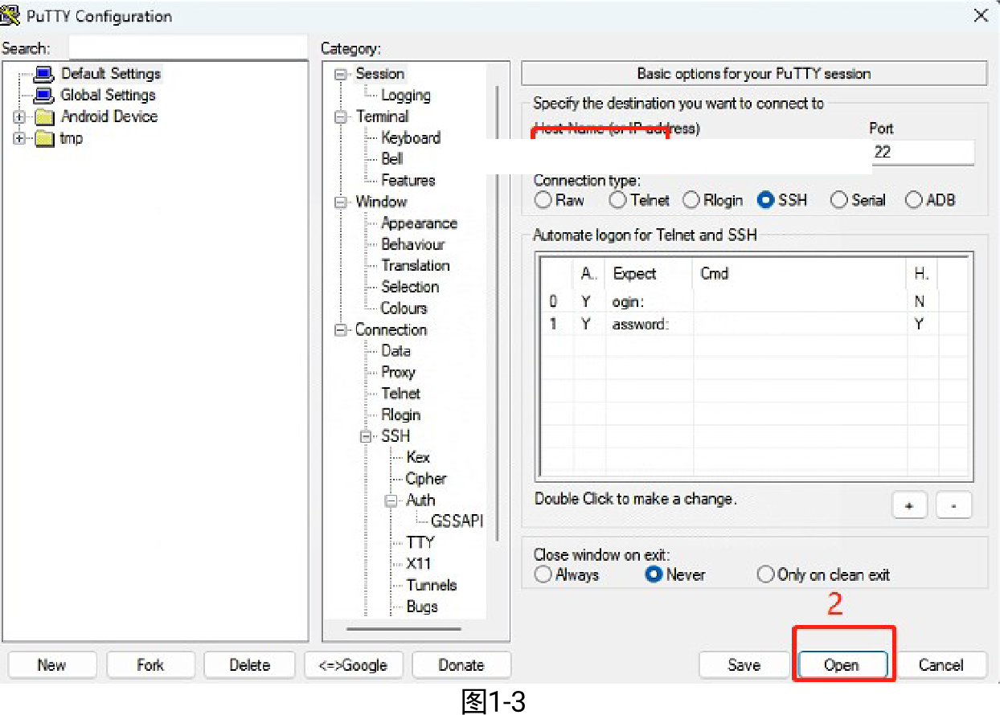
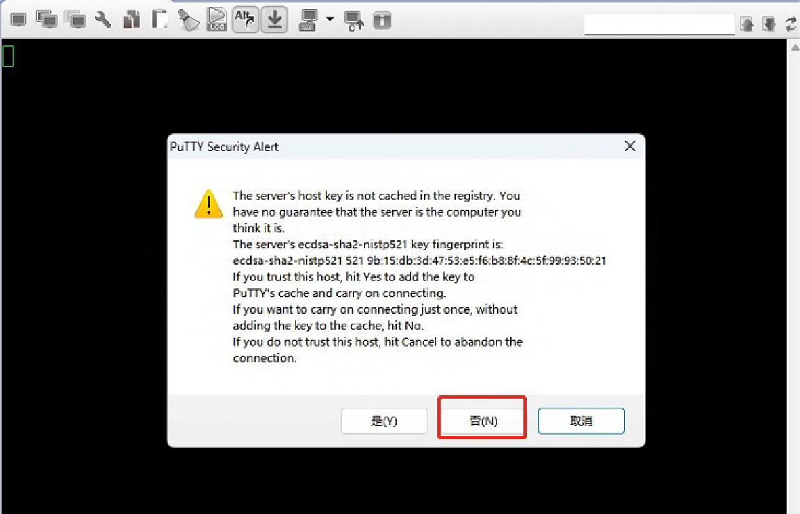
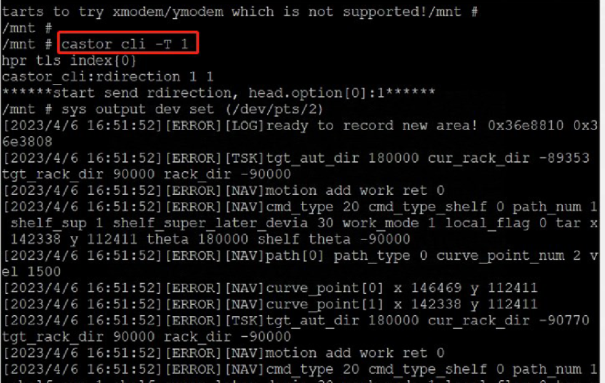
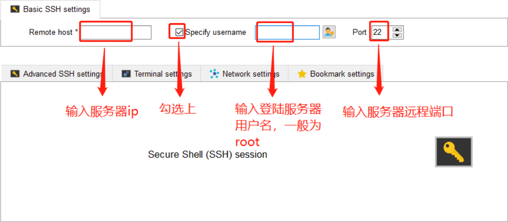

终端工具连接机器人与服务端的常用操作
现场最常用的两类终端操作：用 PuTTY 登录机器人主控跑调试命令、开打印留证；用 MobaXterm 登录服务器，通过 SSH 与 SFTP 上传下载、在线改配置。按操作手册 V5.1 补齐界面步骤、命令与易错点。
配置与工具目录
本篇为基于厂商操作手册的原创整理，只提炼流程与判断方法，不复制原文；不同版本与控制器存在差异，结论请结合现场验证使用。
工具选型与前置条件
| 工具 | 特点 | 适用场景 |
|---|---|---|
| PuTTY | 单文件免安装，只有终端 | 登录机器人主控跑命令、开打印 |
| MobaXterm | 便携版免安装，自带 SFTP 侧栏 | 登录服务器查日志、上传下载、改配置 |
两者都只需要目标设备的 IP、账号、密码。
- 确认本机与目标设备网络可达，SSH 端口未被防火墙拦截。
- 机器人侧若无法连接，先确认 SSH 服务开关已打开。
- 账号需具备相应读写权限，否则能登录但改不了文件。
- 连接参数（IP、端口、账号）以交付资料为准，不要在群里传播密码。
PuTTY 连接机器人
- 解压工具包，双击运行可执行文件，无需安装。
- 在 Host Name (or IP address) 中填写机器人 IP，端口保持 22，Connection type 选 SSH。
- 点击 Open，首次连接会弹出主机密钥提示（见下一节）。
- 在终端出现
login as:时输入用户名root回车，再按交付资料输入密码。输入密码时屏幕不显示字符，属正常现象。 - 出现命令提示符即登录成功，可执行日志查看、重启、调试等命令。

首次连接的主机密钥提示
第一次连接某台设备时会弹窗提示“该主机的密钥未缓存在注册表中”，这是 SSH 的正常安全机制，不是故障。
- 按现场规范点击 “否” 继续连接；点击“是”会缓存该主机密钥，后续不再提示。
- 弹窗中显示的指纹用于核对目标设备身份，可向设备负责人确认后再决定是否缓存。
- 误点缓存后又需要重新确认时，可在 PuTTY 中清理该主机的已知密钥记录，再重新连接。

设备返修或换机后，IP 可能没变但主机密钥已变，此时再连接会报“密钥不匹配”。确认是本人换机后，清理旧的已知密钥记录再连接；无法确认时先联系负责人，不要直接忽略告警。
开打印与保存输出
排查动作类问题时，需要实时观察机器人打印，并把输出留作证据。
- 先配置日志保存：在 PuTTY 的 Session → Logging 中，选择记录全部会话输出，Browse 指定本地保存路径，点击 Apply 生效。
- 再执行
castor_cli -T 1打开打印。 - 复现问题，观察打印中的动作、路径、状态变化。
- 复现结束执行
castor_cli -T 0关闭打印，避免日志持续膨胀。 - 在保存路径下找到日志文件，按时间与故障时刻对应，交给研发分析。

打开打印后再配置保存路径，前半段输出会丢失。日志按“设备编号-日期-故障现象”命名，回传研发时只给日志文件，不要把整段会话截图发到公开群。
MobaXterm 的两种连接方式
解压后运行便携版可执行文件即可，无需安装。
- 会话方式：点击 Session → 选择 SSH → 填写 Remote host（服务器 IP）、Specify username、端口（默认 22）→ OK。连接成功后左侧自动展开 SFTP 面板。
- 命令行方式：点击 Start local terminal，输入
ssh root@服务器IP回车；端口不是 22 时用-p指定，例如ssh -p 55555 root@服务器IP。

命令行方式不写 -p 时默认走 22 端口。端口填错通常表现为连接超时或拒绝，而不是密码错误。
上传与下载文件
方式一：PuTTY 下用 sz/rz
- 下载：在目标目录执行
sz 文件名，按提示选择保存位置；PuTTY 默认下载到本机桌面。 - 上传：在目标目录执行
rz，在弹出的文件选择窗口中选择本地文件上传到当前目录。 - 传输大文件时保持会话不中断，中断后重新连接续传或重传。
方式二：MobaXterm 的 SFTP 面板
- 左侧目录框输入目标目录并回车（如服务账号的 home 目录）。
- 下载：选中文件，点击下载图标，选择本地保存位置。
- 上传：进入目标目录，点击上传图标，选择本地文件并打开。
- 上传后回到终端执行
ls -l确认文件大小与权限。
① 下载到“桌面”后容易被清理或误删，重要日志建议直接保存到固定目录并及时归档；② 上传后文件属主/权限可能变化，覆盖服务配置文件前先确认属主，必要时用 chown/chmod 修正。
在线查看与修改配置文件
以服务端配置文件为例，典型顺序是“定位目录 → 查看 → 备份 → 编辑 → 重启验证”。
- 用
cd切换到配置文件所在目录，用ls确认文件名。 - 用
cat 文件名查看当前内容，先确认要改的键的位置与现值。 - 先备份：用下载功能把原文件取回本地，或在设备上复制一份带日期后缀的副本。
- 用
vim 文件名打开，按i进入编辑模式；方向键移动，修改目标行。 - 修改完成后按
Esc退出编辑模式，输入:wq回车保存并退出。 - 不希望保存时按
Esc后输入:q!强制退出。 - 重启对应服务，检查服务状态与日志，确认配置生效。
① 改前必须备份，禁止直接在唯一副本上改；② 密码、连接串等值不要写在工单、聊天记录或截图里；③ 改完必须重启并验证，未验证不能离场。
常见问题定位
| 现象 | 优先检查 | 处理 |
|---|---|---|
| 机器人连不上 | IP 是否正确、SSH 开关是否打开、是否可 ping 通 | 修正地址；开启 SSH；检查同网段 |
| 连接超时/拒绝（服务器） | 端口是否为非 22、防火墙与安全组 | 命令补 -p；申请放通端口 |
| 登录后改不了文件 | 账号权限、文件属主 | 使用有权限的账号，必要时调整属主 |
| 上传/下载无响应 | 当前目录读写权限、磁盘空间 | 换有权限目录；清理空间后重传 |
| 主机密钥不匹配 | 是否换设备/重装系统 | 确认后清理本地已知密钥再连 |
| vim 界面异常 | 是否误按组合键 | 按 Esc 后 :q! 退出重来，不要强关终端 |
安全与合规操作
- 账号密码按交付资料使用，不在群聊、工单正文或截图中出现；多人共用账号时按项目要求登记使用人。
- 连接外网前确认符合现场网络与信息安全要求，禁止私自把设备映射到公网。
- 导出的日志、配置可能含设备地址、账号等敏感信息，对外提供前先脱敏。
- 临时打开的调试打印，排查结束立即关闭（
castor_cli -T 0），避免影响设备性能与存储。 - 修改配置后保留备份与变更记录，便于回滚与追溯。
上线前核对
- 已确认目标设备 IP 可 ping 通，SSH 端口未被拦截
- 机器人侧 SSH 开关已打开，登录账号具有所需权限
- 首次连接已核对主机指纹并按现场规范选择是否缓存
- 开打印前已配置日志保存路径并确认文件成功落盘
- 打印排查结束后已执行关闭打印命令
- 服务器连接端口正确，非 22 端口时命令带 -p 参数
- 上传/下载完成后已用 ls -l 核对文件大小与权限
- 修改配置文件前已完成备份（本地或设备副本）
- 编辑保存使用 :wq，放弃修改使用 :q!，未产生半截文件
- 配置修改后已重启对应服务并检查状态与日志
- 密码、连接串等敏感信息未出现在截图、聊天记录或工单中
- 导出的日志与配置对外提供前已完成脱敏